용접기사 (2018-03-04 기출문제)
1과목: 기계제작법
1. 용접의 분류에서 아크용접이 아닌 것은?
- MiG 용접
- TIG 용접
- 저항 용접
- 스터드 용접
(정답률: 71%)

2. 두께 3mm인 연강판에 지름 20mm원판을 블랭킹 할 때 소요되는 펀칭력은 약 몇 kN인가? (단, 강판의 전단저항은 30kgf/mm2이고 펀칭력은 마찰저항을 고려하며 이론값의 5%를 가산한다.)
- 56.52
- 58.25
- 59.45
- 60.52
(정답률: 47%)
3. 프레스가공에서 전단가공에 해당하는 것은?
- 펀칭
- 비딩
- 시밍
- 업세팅
(정답률: 71%)
4. 바이트의 이송 및 노즈 반지름에 따른 공작물의 표면 거칠기를 구하는 식으로 옳은 것은? (단, f는 이송량, R은 공구의 날끝 반경값이다.)
- f/8R
- f/8R2
- f2/8R
- 8f/R
(정답률: 50%)
5. 다음 중 보통선반의 구조와 관련 없는 것은?
- 베드
- 테이블
- 심압대
- 왕복대
(정답률: 59%)
6. 담금질한 강에 인성을 부여하고 내부 잔류 응력을 제거하기 위해 실시하는 열처리는?
- 뜨임
- 불림
- 풀림
- 표면경화
(정답률: 54%)
7. 주조(casting)에 대한 일반적인 특징으로 옳지 않은 것은?
- 정밀한 치수를 얻기 쉽다.
- 형상이 복잡한 것들도 제작이 가능하다.
- 모양과 무게에 관계없이 제작할 수 있다.
- 소성가공이나 기계가공이 곤란한 합금들도 쉽게 주조할 수 있다
(정답률: 60%)
8. 연성재료를 절삭 깊이가 깊고 저속절삭(low speed cutting)할 때 발생하는 칩의 종류는?
- 균열형 칩
- 유동형 칩
- 열단형 칩
- 전단형 칩
(정답률: 40%)
9. 전기적 에너지를 기계적인 진동 에너지로 변환하여 금속, 비금속 재료에 상관없이 정밀 가공이 가능한 특수 가공법은?
- 래핑 가공
- 전조 가공
- 전해 가공
- 초음파 가공
(정답률: 67%)
10. 다음 중 연삭숫돌의 결합도가 가장 단단한 것은?
- F
- R
- J
- O
(정답률: 53%)
11. 강구를 가공물의 표면에 분사시켜 표면을 다듬질하고 피로 강도 및 기계적인 성질을 개선할 수 있는 가공법은?
- 버핑
- 버니싱
- 숏 피닝
- 나사 전조0
(정답률: 75%)
12. 용접토치로부터 불활성가스가 분출됨과 동시에 지름 약 1~2mm의 소모성 전극와이어와 모재사이에 아크를 발생시켜 접합하는 용접은?
- MiG 용접
- 피복아크용접
- CO2 가스 용접
- 서브머지드 용접
(정답률: 61%)
13. 다음 중 래크형 공구를 사용하여 기어를 가공하는 공작기계는?
- 펠로스 기어 셰이퍼(fellows gear shaper)
- 기어 호빙 머신(gear hobbing machine)
- 마그 기어 셰이퍼(maag gear shaper)
- 브로칭 머신(broaching machine)
(정답률: 54%)
14. 입도가 작고 연한 숫돌을 작은 압력으로 가공물 표면에 가압하면서 가공물에 이송을 주고, 숫돌을 좌우로 진동시키면서 가공하는 방법은?
- 래핑
- 버핑
- 폴리싱
- 슈퍼 피니싱
(정답률: 56%)
15. 머시닝센터의 프로그램에서 공구경 보정과 관련 있는 G-코드는?
- G00
- G01
- G03
- G40
(정답률: 47%)
16. 다음 중 목형용 목재의 방부법이 아닌 것은?
- 도포법
- 야적법
- 침투법
- 충진법
(정답률: 63%)
17. 구멍이나 축의 허용 한계 치수의 해석에 필요한 원리는?
- 아베의 원리
- 테보의 원리
- 요한슨의 원리
- 테일러의 원리
(정답률: 57%)
18. 다음 중 입자가 녹색 탄화규소로 이루어져 있으며 초경합금의 연삭에 사용하는 숫돌은?
- A 숫돌
- D 숫돌
- GC 숫돌
- WA 숫돌
(정답률: 71%)
19. 광파 간섭현상을 이용하여 마이크로미터 스핀들의 평면도를 측정하는 기기는?
- 옵티컬 플랫
- 공구 현미경
- 오토콜리메이터
- NF식 표면 거칠기 측정기
(정답률: 55%)
20. 구성인선(built up edge)을 감소시키기 위한 방법으로 옳은 것은?
- 절삭속도를 빠르게 한다.
- 절삭 깊이를 깊게 한다.
- 윗면 경사각을 작게 한다.
- 마찰 저항이 큰 공구를 사용한다.
(정답률: 50%)
2과목: 재료역학
21. 지름 80mm의 원형단면의 중립축에 대한 관성모멘트는 약 몇 mm4인가?
- 0.5×106
- 1×106
- 2×106
- 4×106
(정답률: 40%)
22. 다음 금속재료의 거동에 대한 일반적인 설명으로 틀린 것은??
- 재료에 가해지는 응력이 일정하더라도 오랜 시간이 경과하면 변형률이 증가할 수 있다.
- 재료의 거동이 탄성한도로 국한된다고 하더라도 반복하중이 작용하면 재료의 강도가 저하될 수 있다.
- 응력-변형률 곡선에서 하중을 가할 때와 제거할 때의 경로가 다르게 되는 현상을 히스테리시스라 한다.
- 일반적으로 크리프는 고온보다 저온상태에서 더 잘 발생한다.
(정답률: 54%)
23. 비틀림 모멘트 T를 받고 있는 직경이 인 원형축의 최대전단응력은?
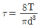
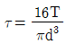
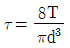
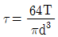
(정답률: 49%)
24. 그림과 같은 T형 단면을 갖는 돌출보의 끝에 집중하중 P＝4.5kN이 작용한다. 단면 A-A에서의 최대 전단응력은 약 몇 kPa인가? (단, 보의 단면2차 모멘트는 5313cm4이고, 밑면에서 도심까지의 거리는 125mm이다.)
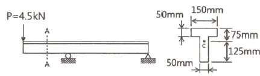
- 421
- 521
- 662
- 721
(정답률: 36%)
25. 코일스프링의 권수를 n, 코일의 지름 D, 소선의 지름 인 코일스프링의 전체처짐 δ는? (단, 이 코일에 작용하는 힘은 P, 가로탄성 계수는 G이다.)
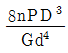
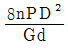
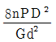
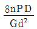
(정답률: 35%)
26. 길이가 ℓ+2a인 균일 단면 봉의 양단에 인장력 P가 작용하고, 양 단에서의 거리가 a인 단면에 Q의 축 하중이 가하여 인장될 때 봉에 일어나는 변형량은 약 몇 cm인가? (단, ℓ＝60cm, a＝30cm, P＝10kN, Q＝5kN, 단면적 A＝4cm2, 탄성계수는 210GPa이다.)
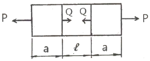
- 0.0107
- 0.0207
- 0.0307
- 0.0407
(정답률: 32%)
27. 그림과 같은 외팔보가 있다. 보의 굽힘에 대한 허용응력을 80MPa로 하고, 자유단 B로부터 보의 중앙점 C사이에 등분포하중 ω를 작용시킬 때, ω의 허용 최대값은 몇 kN/m인가? (단, 외팔보의 폭×높이는 5cm×9cm이다.)
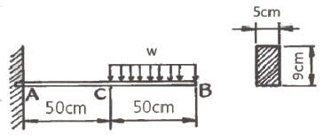
- 12.4
- 13.4
- 14.4
- 15.4
(정답률: 44%)
28. 다음 정사각형 단면(40mm×40mm)을 가진 외팔보가 있다. a-a면 에서의 수직응력(σn)과 전단응력(τs)은 각각 몇 kPa인가?
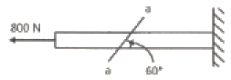
- σn=693, τs=400
- σn＝400, τs=693
- σn＝375, τs=217
- σn＝217, τs =375
(정답률: 35%)
29. 지름 50mm의 알루미늄 봉에 100kN의 인장하중이 작용할 때 300mm의 표점거리에서 0.219mm의 신장이 측정되고, 지름은 0.01215mm만큼 감소되었다. 이 재료의 전단 탄성계수 G는 약 몇 GPa인가? (단, 알루미늄 재료는 탄성거동 범위 내에 있다.)
- 21.2
- 26.2
- 31.2
- 36.2
(정답률: 34%)
30. 그림과 같은 정삼각형 트러스의 B점에 수직으로, C점에 수평으로 하중이 작용하고 있을 때, 부재 AB에 작용하는 하중은?
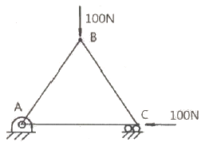
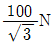
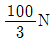
- 100√3n
- 50N
(정답률: 49%)
31. σx=700MPa, σy=－300MPa가 작용하는 평면응력 상태에서 최대 수직응력(σmax)과 최대 전단응력(τmax)은 각각 몇 MPa인가?
- σmax＝700, τmax＝300
- σmax＝600, τmax＝400
- σmax＝500, τmax＝700
- σmax＝700, τmax＝500
(정답률: 33%)
32. 최대 사용강도(σmax)＝240MPa, 내경 1.5m, 두께 3mm의 강재 원통형 용기가 견딜 수 있는 최대 압력은 몇 kPa인가? (단, 안전계수는 2이다.)
- 240
- 480
- 960
- 1920
(정답률: 38%)
33. 길이가 L이며, 관성 모멘트가 Ip이고, 전단탄성계수가 G인 부재에 토크 T가 작용될때 이 부재에 저장된 변형 에너지는?
- TL/GIp
- T2L/2GIp
- T2L/GIp
- TL/2GIp
(정답률: 37%)
34. 그림과 같이 초기온도 20℃, 초기길이 19.95cm, 지름 5cm인 봉을 간격이 20cm인 두벽면 사이에 넣고 봉의 온도를 220℃로 가열했을 때 봉에 발생되는 응력은 몇 MPa인가? (단, 탄성계수 E＝210GPa이고, 균일 단면을 갖는 봉의 선팽창계수 a＝1.5×10-5/℃이다.)
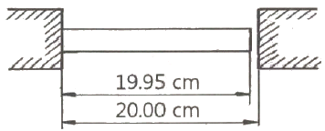
- 0
- 25.2
- 257
- 504
(정답률: 38%)
35. 그림과 같은 직사각형 단면의 목재 외팔보에 집중하중 P가 C점에 작용하고 있다. 목재의 허용압축응력을 8MPa, 끝단 B점에서의 허용 처짐량을 23.9mm라고 할 때 허용압축응력과 허용 처짐량을 모두 고려하여 이 목재에 가할 수 있는 집중하중 P의 최대값은 약 몇 kN인가? (단, 목재의 탄성계수는 12GPa, 단면2차모멘트 1022×10-6m4, 단면계수는 4.601×10-3m3이다.)
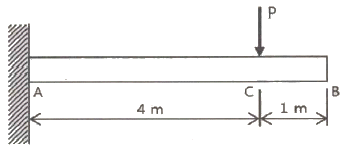
- 7.8
- 8.5
- 9.2
- 10.0
(정답률: 36%)
36. 직사각형 단면(폭×높이＝12cm×5cm)이고, 길이 1m인 외팔보가 있다. 이 보의 허용 굽힘응력이 500MPa이라면 높이와 폭의 치수를 서로 바꾸면 받을 수 있는 하중의 크기는 어떻게 변화하는가?
- 1.2배 증가
- 2.4배 증가
- 1.2배 감소
- 변화없다.
(정답률: 36%)
37. 양단이 힌지로 지지되어 있고 길이가 1m인 기둥이 있다. 단면이 30mm×30mm인 정사각형이라면 임계하중은 약 몇 kN인가? (단, 탄성계수는 210GPa이고, Euler의 공식을 적용 한다.)
- 133
- 137
- 140
- 146
(정답률: 34%)
38. 아래 그림과 같은 보에 대한 굽힘 모멘트선도로 옳은 것은?
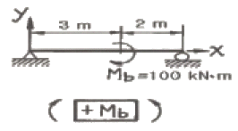
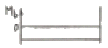
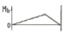
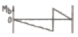
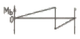
(정답률: 30%)
39. 다음 그림과같이 집중하중 P를 받고 있는 고정 지지보가 있다. B점에서의 반력의 크기를 구하면 몇 kN인가?
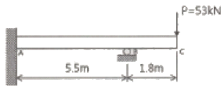
- 54.2
- 62.4
- 7.03
- 79.0
(정답률: 17%)
40. 다음 보의 자유단 A지점에서 발샌하는 처짐은 얼마인가? (단, EI는 굽힘간성이다.)
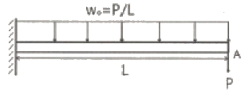
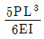
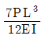
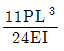
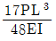
(정답률: 36%)
3과목: 용접야금
41. 다음 중 탈인을 촉진하기 위한 조건으로 틀린 것은?
- 강욕 온도가 낮을 것
- 슬래그의 유동성이 좋을 것
- 슬래그의 산화력이 낮을 것
- 슬래그의 염기도가 높을 것
(정답률: 30%)
42. 다음 알루미늄 합금 중 강도가 높은 것으로 항공기, 철도 차량, 스포츠 용품, 스키 스톡 등에 사용되는 Al-Zn-Mg-Cu계 합금은?
- A 2000계
- A 3000계
- A 5000계
- A 7000계
(정답률: 54%)
43. 용접에 쓰이는 피복제의 종류 중 탄산칼슘, 불화칼슘 등을 주성분으로 하며 아크는 약간 불안정하나, 균열에 대한 감수성이 높은 것은?
- 저소수계
- 일미나이트계
- 고산화 티탄계
- 고셀룰로오스계
(정답률: 50%)
44. Fe-C 평형 상태도에서 나타나는 현상으로 액상 철로부터 오스테나이트와 시멘타이트가 동시에 정출되는 반응은?
- 공석반응
- 공정반응
- 전율반응
- 포정반응
(정답률: 40%)
45. 강을 오스테나이트의 상태에서 물 또는 기름등으로 담금질하면 어떤 조직으로 변하는가?
- 페라이트
- 펄라이트
- 마텐자이트
- 트루스타이트
(정답률: 49%)
46. 다음 중 면심입방격자(FCC)에 속하는 금속은?
- Nb
- Mo
- Zn
- aL
(정답률: 50%)
47. 금속의 조직 중 시멘타이트 조직이란 무엇인가?
- Fe와 Si의 화합물
- Fe와 C의 화합물
- Fe와 O의 화합물
- Fe와 Mn의 화합물
(정답률: 49%)
48. 강을 열처리할 때 어떤 온도에서 냉각을 정지하고 그 온도에서 변태를 시켜 변태 개시온도와 변태 완료온도를 온도-시간 곡선으로 나타내는 것을 무엇이라 하는가?
- 항온변태곡선
- 항온뜨임곡선
- 항온풀림곡선
- 항온불림곡선
(정답률: 61%)
49. 오스테나이트 상태로부터 Ms점 이상인 적당한 온도의 염욕으로 담금질하여 과랭오스테나이트가 염욕 중에서 항온 변태가 종료할 때까지 항온을 유지하고, 공기 중으로 냉각하는 과정에서 베이나이트 조직을 얻는 열처리 방법은?
- 마템퍼링
- 서브제로
- 오스템퍼링
- 시간 담금질
(정답률: 43%)
50. 다음 중 좋은 슬래그를 만들기 위하여 용제가 지녀야 할 조건으로 틀린 것은?
- 용융점이 낮을 것
- 조금속과 비중차가 작을 것
- 점성이 낮고 좋은 유동성을 지닐 것
- 불순물의 용해도가 크고, 목적 금속의 용해도가 작을 것
(정답률: 41%)
51. 다음 중 강의 내마멸성과 경도를 향상시키기 위해 실시하는 열처리로 가장 적합한 것은?
- 불림
- 연화
- 풀림
- 담금질
(정답률: 57%)
52. 주철의 조직에 큰 영향을 미치는 원소끼리 짝지어진 것은?
- Al, Cu
- C, Si
- C, N
- Mn, Zn
(정답률: 45%)
53. 금속을 구부리거나 두들겨서 변형을가하거나 늘려서 금속을 단단하게 하는 방법을 무엇이라 하는가?
- 가공경화
- 고용강화
- 복합강화
- 분산경화
(정답률: 67%)
54. 철-탄소의 합금으로 된 공석강의 탄소함유량은 약 몇 % 인가?
- 0.2
- 0.8
- 1.6
- 20.
(정답률: 55%)
55. 모재의 결함에 기인되는 것으로 모재 내에 기포가 압연되어 발생되는 유황 밴드와 같이 층상으로 편재해 강재의 내부적 노치를 형성한 것으로 불순물과 수소원을 포함하는 균열을 무엇이라 하는가?
- 힐 균열
- 유황 균열
- 크레이터 균열
- 라미네이션 균열
(정답률: 49%)
56. 다음 중 강의 적열취성에 주원인이 되는 원소는?
- P
- S
- Cu
- Mn
(정답률: 57%)
57. 다음 금속 침투법 중 철강표면에 알루미늄을 확산 침투시키는 방법은?
- 칼로라이징
- 세라다이징
- 크로마이징
- 실리코나이징
(정답률: 48%)
58. 다음 용접 균열 중 고온 균열에 속하는 것은?
- 힐 균열
- 루트 균열
- 토우 균열
- 크레이터 균열
(정답률: 46%)
59. 가단주철의 종류에 포함되지 않는 것은?
- 백심 가단주철
- 흑심 가단주철
- 페라이트 가단주철
- 펄라이트 가단주철
(정답률: 34%)
60. 다음 중 저온균열에 영향을 주는 요소로 가장 거리가 먼 것은?
- 수소의 존재
- 높은 잔류응력
- 양질 처리된 용접봉의 사용
- 균열 감수성이 있는 미세조직
(정답률: 52%)
4과목: 용접구조설계
61. 용적작업 할 때 용접순서를 결정하는 사항 중 틀린 것은?
- 대칭적으로 용접을 진행한다.
- 동일 평면 내에 이음이 많을 경우 수축은 가능한 자유단으로 보낸다.
- 가능한 수축이 큰 이음을 먼저 용접하고, 수축이 작은 이음은 나중에 한다.
- 리벳과 용접을 병용하는 경우에는 리벳을 먼저하고 용접이음을 나중에 한다.
(정답률: 53%)
62. 용접시공 전 용접준비의 중요한 항목 중 틀린 것은?
- 용접사 선임
- 용접봉의 선택
- 용접 비드검사
- 모재의 재질 확인
(정답률: 67%)
63. 용접 변형 방지법의 종류 중 용접물을 정반에 고정시키거나 보강제를 이용하여 강제적으로 변형을 억제하는 방법은?
- 피닝법
- 구속법
- 냉각법
- 역변형법
(정답률: 61%)
64. 용접 구조물의 가용접시 주의사항으로 틀린 것은?
- 본용접과 같은 온도에서 예열한다.
- 일반적인 가용접 간격은 판두께의 15~30배 정도로 한다.
- 용접봉은 본용접 작업시에 사용하는 것보다 약간 가는 것을 사용한다,
- 가용접의 위치는 부품의 끝, 모서리 등과 같이 응력이 집중되는 곳에 한다.
(정답률: 53%)
65. 다음 중 용접공수에 해당 되지 않은 것은?
- 간접공수
- 운반공수
- 가용접공수
- 본용접공수
(정답률: 58%)
66. 다음 중 경도 시험 방법과 가장 거리가 먼 것은?
- 크리프
- 브리넬
- 비커스
- 로크웰
(정답률: 46%)
67. 구조용 강의 용접균열 중 열 영향부에 많이 생가는 균열이 아닌 것은?
- 루트 균열
- 토우 균열
- 비드 밑 균열
- 크레이터 균열
(정답률: 32%)
68. 용접성을 이음성능과 사용성능으로 구분할 때 이음성능에 해당하는 것은?
- 용접 결함으 정도
- 용접변형과 잔류응력
- 모재와 용접금속의 노치인성
- 모재와 용접금속의 기계적 성질
(정답률: 35%)
69. 용접부 검사방버의 분류 중 야금학적 시험법에 포한되지 않는 것은?
- 형광 시험
- 파면 시험
- 설퍼 프린트 시험
- 현미경 조직 시험
(정답률: 40%)
70. 용접부 시험 중 용접 연성 시험의 종류가 아닌 것은?
- 킨젤 시험
- 코머렐 시험
- 슈나트 시험
- 오스트리아 시험
(정답률: 19%)
71. 용접 변형 중 면외 변형이 아닌 것은?
- 각변형
- 회전변형
- 좌굴변형
- 세로굽힘변형
(정답률: 38%)
72. 피복아크용접에서 용접 전류를 200A, 아크전압을 25V, 용접 속도를 15㎝/min으로 용접할 때 용접 입열을 몇 J/㎝ 인가?
- 10000
- 15000
- 20000
- 25000
(정답률: 53%)
73. 한 부분의 몇 층을 용접하다가 이것을 다음 부분의 층으로 연속시켜, 전체가 단계를 이루도록 용착시켜 나가는 방법은?
- 후진법
- 스킵법
- 덧살올림법
- 캐스케이드법
(정답률: 55%)
74. 다음 중 용접봉 사용량을 산출하는 계산 공식으로 가장 적합한 것은? (단, 용접봉 사용량의 단위는 kgf, 개선부 단위면적의 단위는 cm2, 용접길의 단위는 ㎝, 융착효율의 단위는 % 이다.)
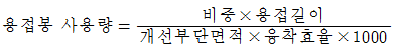
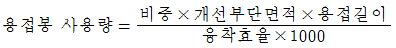
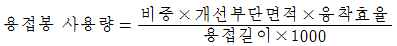
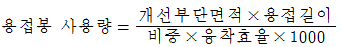
(정답률: 31%)
75. 용접부애 발생하는 기공의 원인으로 가장 거리가 먼 것은?
- 용접봉 건조 불량
- 과대 전류의 사용
- 적정 용접속도 유지
- 용접부의 금속한 응고
(정답률: 56%)
76. 다음 중 감마(γ)선 투과검사에서 사용됮 않는 동위 원소는?
- 칼슘 28
- 코발트 60
- 세슘 137
- 이리듐 192
(정답률: 46%)
77. 용접변형에 영향을 미치는 인자 중에서 용접변형을 억제하는 인자는?
- 용접전류
- 아크전압
- 용접속도
- 부재의 강성
(정답률: 55%)
78. 다음 중 초음파 탐상법에 속하지 않는 것은?
- 투과법
- 공진법
- 극간법
- 펄스 반사법
(정답률: 38%)
79. 그림과 같은 파이프 용접을 할 때 각변형이 생기지 않도록 하는 용접 순서로 가장 적합한 것은?
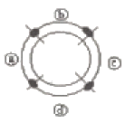
- ⓓ→ⓐ→ⓑ→ⓒ
- ⓓ→ⓒ→ⓑ→ⓐ
- ⓓ→ⓑ→ⓐ→ⓒ
- ⓓ→ⓐ→ⓒ→ⓑ
(정답률: 58%)
80. 다음 중 열전도율이 가장 높은 금속은?
- CU
- Mg
- Ni
- Zn
(정답률: 60%)
5과목: 용접일반 및 안전관리
81. 화재 발생의 구성요소 3가지는?
- 점화원, 탄소, 가연성 물질
- 인화점, 산소, 가연성 물질
- 발화점, 질소, 가연성 물질
- 점화원, 산소, 가연성 물질
(정답률: 58%)
82. 정류기형 직류 아크용접기의 특성으로 틀린 것은?
- 완전한 직류를 얻을 수 있다.
- 소음이 거의 발생하지 않는다.
- 빌전형에 비하여 고장이 적다.
- 취급이 간단하고 가격이 저렴하다.
(정답률: 38%)
83. 가스용접 시 압력조정기의 구비조건 중 틀린 것은?
- 사용 시 빙결하지 않을 것
- 동작이 예민하고 확실 할 것
- 조정압력과 사용압역의 차이가 클 것
- 조정압력은 항상 일정한 압력을 유지할 것
(정답률: 65%)
84. 납땜의 용제가 갖추어야할 조건으로 틀린 것은?
- 청정한 금속면의 산화를 방지 할 것
- 전기 저항 납땜에 사용되는 것은 부도체일 것
- 용제의 유효온도 범위와 납땜의 온도가 일치할 것
- 모재의 간화 피막과 같은 불순물을 제거하고 유동성이 좋을 것
(정답률: 56%)
85. 다음 용접법 중 금속 및 화합물의 미분말을 가열하여 반응융 상태로 분출시켜 밀착 피복하는 것은?
- 용사
- 전자빔 용접
- 스터드 용접
- 테르밋 용접
(정답률: 41%)
86. 아크의 특성 중 전류가 커지면 저항이 작아져서 전압도 낮아지는 특성은?
- 상승 특성
- 수하 특성
- 정전압 특성
- 부저항 특성
(정답률: 33%)
87. 용접전류에 의해 아크 주위에 발생하는 자장이 용접봉에 대해서 비대칭으로 나타나는 현상을 무엇이라 하는가?
- 아크쏠림
- 핀치효과
- 청정작용
- 단락이행
(정답률: 65%)
88. 염화암모늄과 섞어 사용하는 것으로 흡수성과 내식성이 강하며, 특수한 처리를 하면 스테인리스 납땜에도 사용할 수 있는 연납용용제는?
- 인산
- 알칼리
- 목재수지
- 염화아연
(정답률: 42%)
89. 기체를 가열하여 온도가 상승되면 기체 원자의 운동이 활발하게 되어 기에 원자가 원자핵과 전자로 분리되어 (+), (-)의 이온상태로 된다. 이를 이용한 절단 방법을 무엇이라 하는가?
- 분말 절단
- 산소창 절단
- 플라스마 절단
- 워터제트 절단
(정답률: 63%)
90. 내식성이 필요한 곳이나 내압 용기 제작 등에 사용하는 용접으로 용접부에 산소나 질소 증이 침투하지 않고 흠이 없는 치밀하고 연성이 풍부하며 표면아 깨끗한 융착금속을 얻을 수 있는 용접은?
- 논가스 아크 용접
- 원자 수소 아크 용접
- 플라스마 제트 용접
- 일렉트로 슬래그 용접
(정답률: 38%)
91. 다음 중 저항 용접법이 아닌 것은?
- 업셋 용접
- 퍼커션 용접
- 플래시 용접
- 원자 수소 용접
(정답률: 49%)
92. 가스 용접기 설치 및 불꽃 조정에 관한 내용으로 틀린 것은?
- 용접 토치에 호스 밴드를 사용하여 단단히 호스를 접속한다.
- 압력 조정기를 각각의 용기에 가스의 누설이 없도록 정확하게 설치한다.
- 토치에 점화를 한 후 산소 밸브를 조금씩 열어 산소를 증가시켜 중성 불꽃으로 조정한다.
- 각부의 접속이 완료되면 고압밸브, 압력 조정기를 열어 사용 압력으로 조정한 후 가스 불꽃을 사용하여 모든 접속부에 가스 누설의 유무를 점검한다.
(정답률: 60%)
93. 다음 중 감전재해의 주요 원인과 가장 거리가 먼 것은?
- 1차 측과 2차 측의 손상된 케이블에 접촉된 경우
- 용접 중 홀더가 신체에 접촉될 때나 홀더에 용접봉을 고정할 때
- 비가 오는 환경이나 젖은 장갑, 작업복을 입고 용접하는 경우
- 건조한 상태네서 스위치를 조작하거나 전원 스위치를 OFF한 후 용접기를 수리할 때
(정답률: 61%)
94. 다음 저항 용접 중 맞대기 용접에 속하는 것은?
- 심 용접
- 스폿 용접
- 플래시 용접
- 프로젝션 용접
(정답률: 32%)
95. 동자기구가 수직면 또는 수평면 내에서 선회하며 회전영역이 넓고 팔이 기울여져 상하로 움직이므로 대상물의 손끝 자세를 맟추기 쉬워 스폿 용접용 로봇에 많이 사용되는 로봇은?
- 극 좌표 로봇
- 직각 좌표 로봇
- 원통 좌표 로봇
- 관절 좌표 로봇
(정답률: 36%)
96. 내용적아 33L안 산소용기의 고압력계에 100kgf/cm2으로 나타났다면, 프랑스식 300번의 팁으로는 몇 시간 용접할 수 있는가? (단, 산소와 아세틸렌의 혼합비는 1 : 1이다.)
- 7.5시간
- 11시간
- 15시간
- 20시간
(정답률: 53%)
97. 피복 아크 용접에서 일반적으로 모재에 흡수되는 열량은 입열의 보통 몇 % 정도인가?
- 25~45
- 50~70
- 75~85
- 90~100
(정답률: 52%)
98. 150A 이상 300A 미만의 아크 용접 및 절단 등에 쓰이는 적당한 차광유리의 차광도 번호는?
- 6~7
- 8~9
- 10~12
- 14 이상
(정답률: 53%)
99. 다음 중 탄산가스 아크 용접에서 스패터가 많이 발생하는 원인으로 가장 거리가 먼 것은?
- 자기쏠림
- 용접 조건의 부적합
- 교류 리액터 탭 불량
- 1차 압력 접압 불균형
(정답률: 39%)
100. 용접기의 네임플레이트(name plate)에 사용률이 40%로 되어 있다면, 용접 작업시간을 1일 8시간 기준하여 아크 발생시간은 얼마 정도인가?
- 120분
- 192분
- 320분
- 480분
(정답률: 46%)